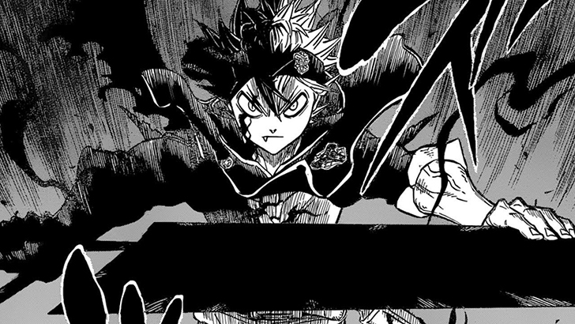

Black Clover
Resumo
Em um mundo em que até as tarefas mais simples do dia a dia são feitas com o uso de magia, quem não consegue usá-la é tratado como nada! Esta é a vida de Asta, um jovem que mesmo sem um pingo de magia, sonha em se tornar o Mago Imperador, o mais forte de todos os magos! Com muito esforço e trabalho duro, será ele capaz de atingir seus objetivos e superar seu genial rival e amigo de infância, Yuno?!!